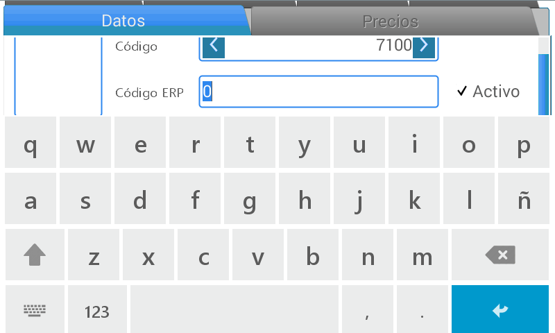
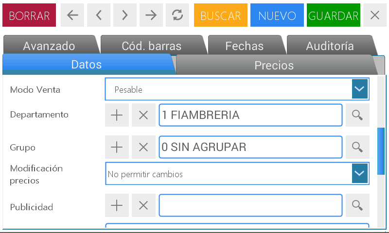
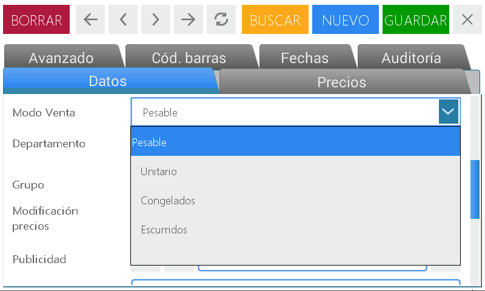

Acciones de uso frecuente
Antes de comenzar a describir cómo se desarrolla la configuración del equipo, detallaremos algunas acciones generales que son de uso frecuente.
Para utilizar el menú de búsqueda
Presione la lupa

En el cuadro derecho visualiza el detalle que contiene el menú de búsqueda de acuerdo al módulo donde se encuentra
Elija el que corresponde a la búsqueda a realizar

Presione seleccionar.
También dispone del campo de escritura para realizar la búsqueda de un registro por palabra clave.
En este caso:
Presione el recuadro de escritura y luego la tecla para visualizar en la pantalla el teclado alfanumérico.

Escriba el término requerido y presione Entrar.
Luego presione Buscar y en el cuadrante derecho podrá visualizar todas las opciones que coinciden con la palabra clave ingresada.

Escoja la deseada y presione Seleccionar.

Para activar el campo de escritura:
Presione el recuadro para habilitar el espacio de escritura
Presione la tecla para visualizar el teclado alfanumérico en la pantalla

Presione las letras para escribir o la tecla 123 para visualizar el teclado numérico
Presione Entrar para confirmar

Menú desplegable
Presione la flecha ubicada en el extremo derecho del recuadro. De esta manera se habilita el menú desplegable que muestra todas las posibilidades con las que cuenta el equipo de fábrica

Seleccione la que corresponda presionando sobre la misma.

Campo con flechas
Para utilizar las flechas:
Presione las flechas ubicadas en los extremos del recuadro para incrementar el valor (flecha derecha) o para disminuirlo (flecha izquierda)
Ingrese el valor a través del teclado numérico:
Presione el recuadro para activarlo.
Ubique el cursor detrás del número o deslice el dedo para marcarlo.
Coloque el número deseado a través del teclado numérico de la balanza.
Icono +
Le permite acceder a los registros ya existentes para realizar alguna modificación:
Presione el ícono +
Presione el campo de escritura que se habilite
Presione para habilitar el teclado alfanumérico y ejecute los cambios que necesite.
Luego presione guardar y cierre el área de trabajo.
Icono X
Le permite eliminar los datos o registros seleccionados para volver a realizar la acción.